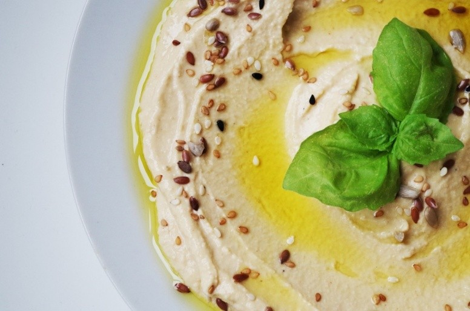

חומוס עדשים כתומות!
חומוס קל, מהיר הכנה וקל גם למערכת העיכול, מומלץ מאוד!
רכיבים:
500 גרם עדשים כתומות
1/4-1/3 כוס טחינה גולמית
מיץ לימון
כמון, מלח, פלפל לבן, שום (אופציונאלי)
אופן ההכנה:
משרים את העדשים ל12 שעות.
מבשלים עד ריכוך, מסננים מנוזלים ומקררים קצת.
מכניסים למעבד המזון וטוחנים עם התבלינים (שימו כמות תבלינים לפי טעמכם תתחילו מחצי כפית, תטעמו, ותוסיפו לפי הצורך).
מוסיפים את הטחינה הגולמית וממשיכים לעבד עד מרקם חלק וקצת יותר נוזלי מהמרקם הסופי שתרצו (זה עוד מתמצק במקרר).